11. Last Agent Routing 시나리오
Connect에서는 유연한 Contact flow 디자인으로 여러가지 Routing 을 구성해볼 수 있습니다. 이번 장에서는 Last Agent Routing 을 구성해보겠습니다. 이전 4장에서 DynamoDB의 고객 정보 항목 중 lastagent 항목에 저장되어 있는 직전 상담원 기록을 이용해, 현재 그 상담원이 상담을 받을 수 있는 상태(Available)이면 연결하는 시나리오입니다. 그리고 또한, 상담원과 통화가 성공하면 DynamoDB의 현재 상담주인 상담사로 lastagent 항목을 업데이트하는 실습도 해보겠습니다.
Last agent 연결 Conatct flow 편집
-
Connect 콘솔로 접속하여 ConnectIMD8 을 편집합니다.

-
아래 시나리오를 작성합니다. 각각의 Command Block 설정은 아래 설명을 참고하여 작성합니다. 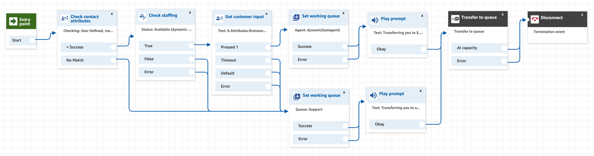
-
Check contact attributes Command Block 을 왼쪽 리스트 중 Branch 메뉴에서 Drag&Drop 으로 편집 화면으로 가져옵니다. 아래와 같이 설정한 후 Save 버튼을 클릭하여 설정을 저장합니다. message 변수를 확인하여 Lambda 함수로 고객 정보를 가져오는 것을 성공했는지 확인합니다. 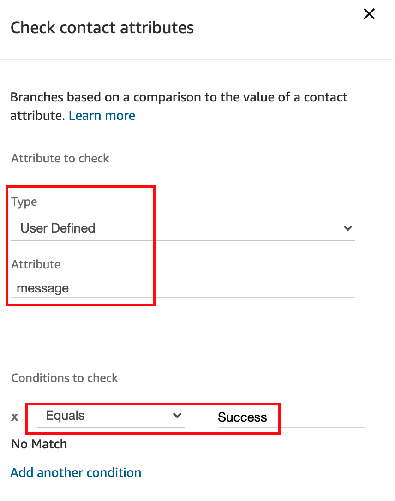
-
Check staffing Command Block 을 왼쪽 리스트 중 Branch 메뉴에서 Drag&Drop 으로 편집 화면으로 가져옵니다. 아래와 같이 설정한 후 Save 버튼을 클릭하여 설정을 저장합니다. 이전 4장에서 DynamoDB에서 가져온 lastagent 정보를 바탕으로 해당 상담원이 현재 상담을 받을 수 있는 상태 (Available)인지 확인하고 분기할 수 있도록 합니다. 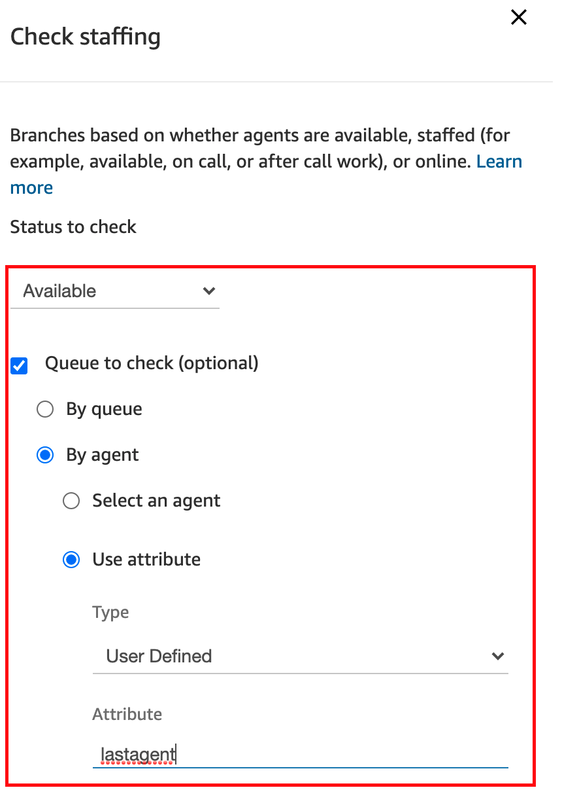
-
Get customer input Command Block 을 왼쪽 리스트 중 Interact 메뉴에서 Drag&Drop 으로 편집 화면으로 가져옵니다. Text는 아래에서 복사하여 적용합니다. 기타 설정은 아래와 같이 설정한 이후 Save 버튼을 클릭하여 설정을 저장합니다. 고객에게 직전 상담원 정보를 알려주고 해당 상담원과 통화할 지를 문의한 후 선택에 따라 분기합니다.
$.Attributes.firstname last time you you spoke with $.Attributes.lastagent. Press 1 if you would like to like to speak to them again.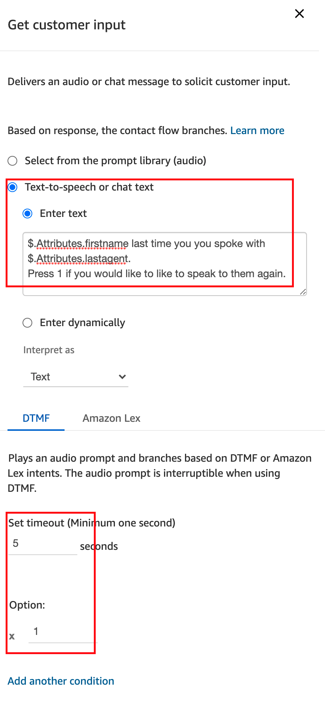
-
Set working queue Command Block 을 왼쪽 리스트 중 Set 메뉴에서 Drag&Drop 으로 편집 화면으로 가져옵니다. 아래와 같이 설정한 후 Save 버튼을 클릭하여 설정을 저장합니다. Queue 의 종류는 Standard Queue 와 Agent Queue 로 구분할 수 있습니다. 현재 시나리오에서는 직전 상담원의 Agent Queue 에서 대기할 수 있도록 설정합니다. 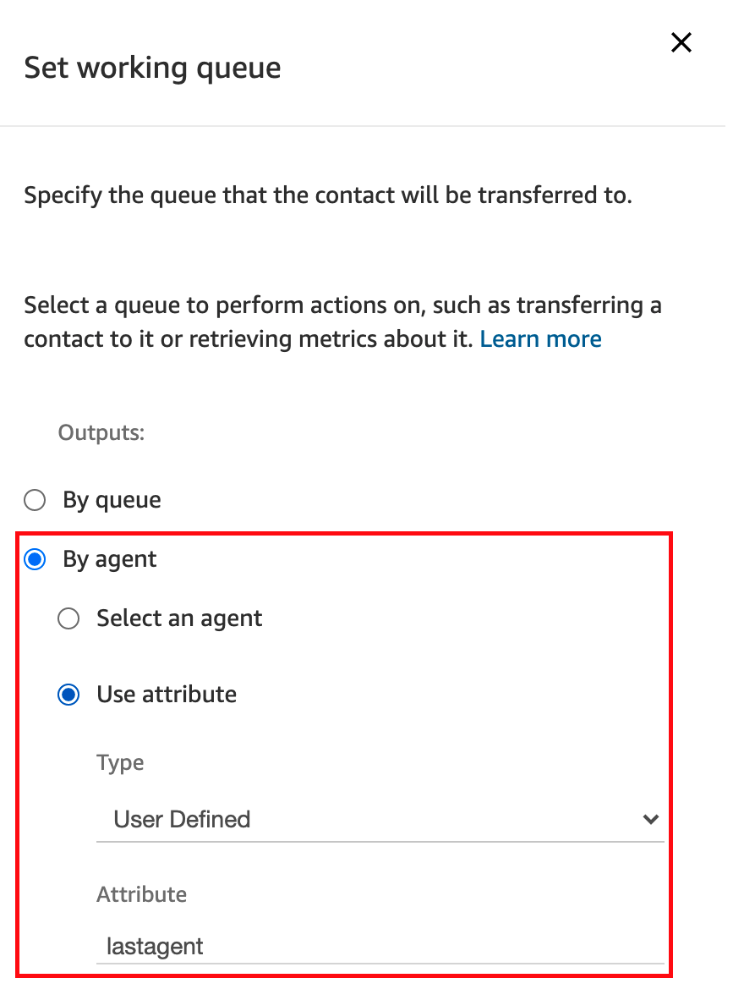
Queue 에 대한 설명은 다음 링크를 참고하세요. https://docs.aws.amazon.com/connect/latest/adminguide/concepts-queues-standard-and-agent.html
-
Set working queue Command Block 을 왼쪽 리스트 중 Set 메뉴에서 Drag&Drop 으로 편집 화면으로 가져옵니다. 아래와 같이 설정한 후 Save 버튼을 클릭하여 설정을 저장합니다. 위 5번에서 고객에 직전 상담원으로 연결되는 것을 원하지 않은 경우, 또는 기타의 경우에는 Support Queue 에서 대기하도록 설정합니다. 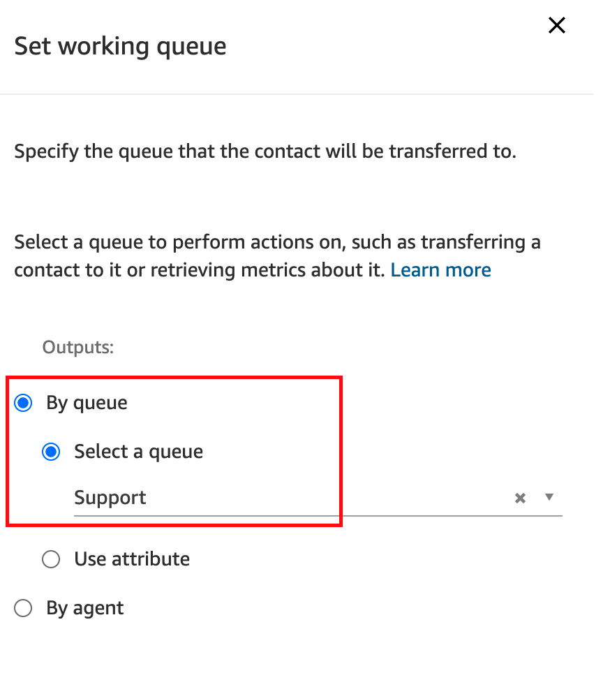
-
Play prompt Command Block 을 왼쪽 리스트 중 Interact 메뉴에서 Drag&Drop 으로 편집 화면으로 가져옵니다. 아래 Text 를 복사해서 입력합니다. Save 버튼을 클릭하여 설정을 저장합니다.
Transferring you to $.Attributes.lastagent now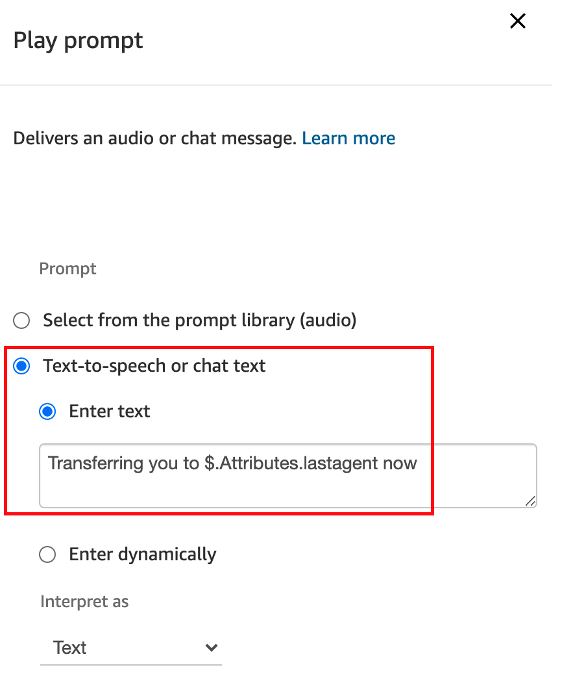
-
Play prompt Command Block 을 왼쪽 리스트 중 Interact 메뉴에서 Drag&Drop 으로 편집 화면으로 가져옵니다. 아래 Text 를 복사해서 입력합니다. Save 버튼을 클릭하여 설정을 저장합니다.
Transferring you to an agent now.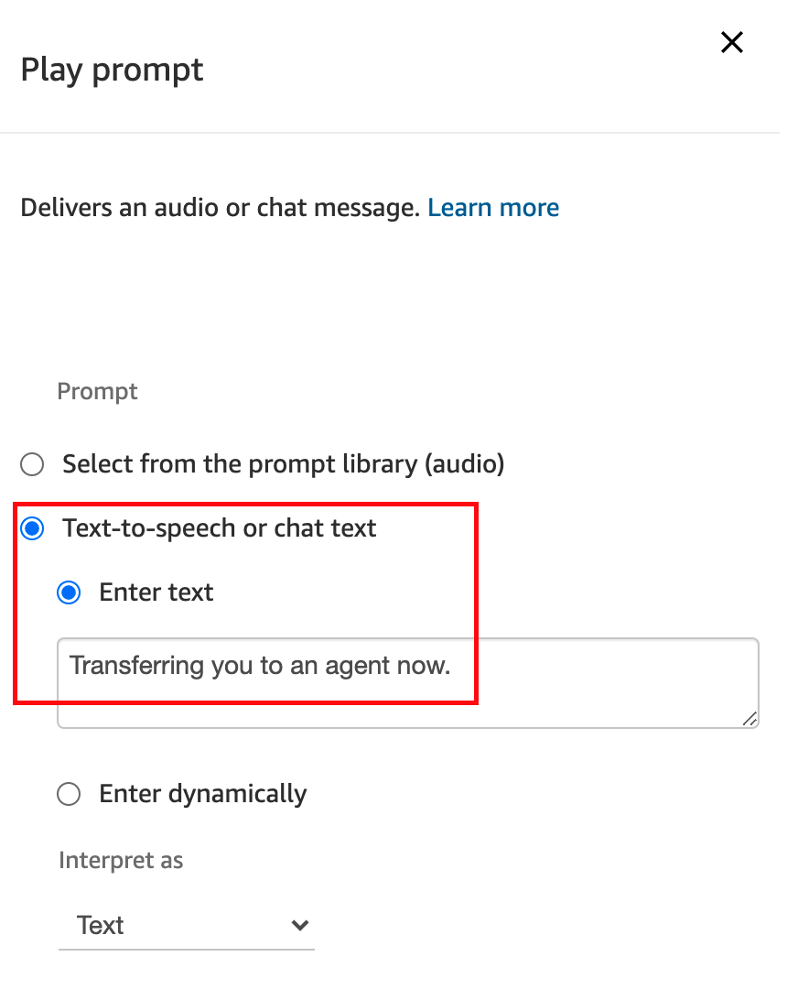
Last agent Update Lambda 함수 생성
-
AWS 콘솔로 접속하여 Lambda 서비스로 이동합니다.

-
Create function 버튼을 클릭하여 Lambda 함수를 생성합니다. 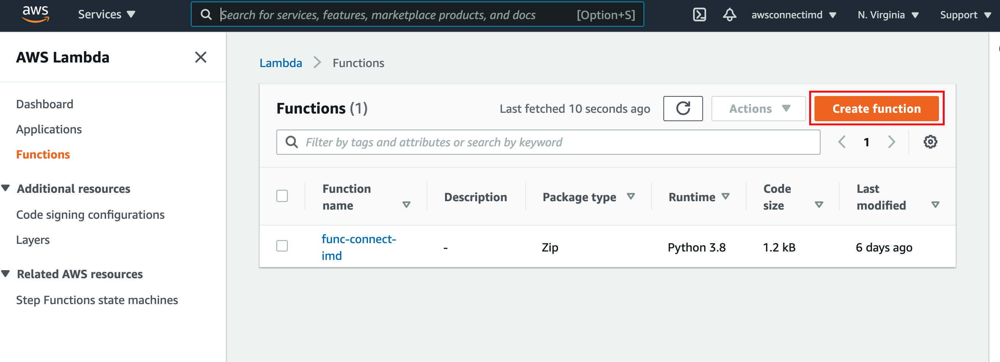
-
아래와 같이 설정합니다. 함수 이름은 아래 Text를 복사하여 정확히 입력합니다.
func-connect-lastagent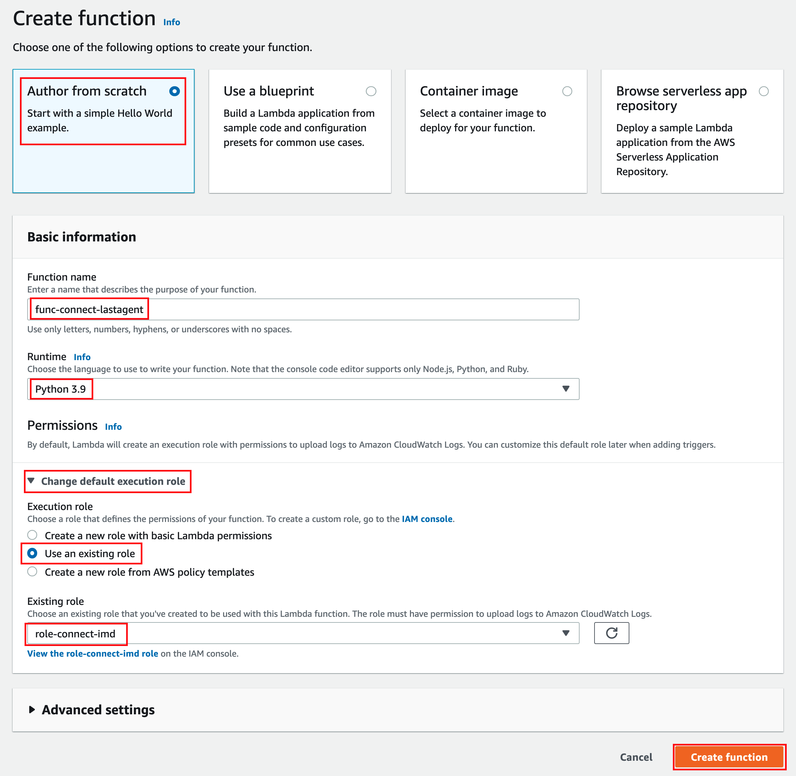
-
아래와 같이 코드를 복사하여 입력합니다.
# MIT No Attribution # Copyright 2021 AWS # Permission is hereby granted, free of charge, to any person obtaining a copy of this # software and associated documentation files (the "Software"), to deal in the Software # without restriction, including without limitation the rights to use, copy, modify, # merge, publish, distribute, sublicense, and/or sell copies of the Software, and to # permit persons to whom the Software is furnished to do so. # THE SOFTWARE IS PROVIDED "AS IS", WITHOUT WARRANTY OF ANY KIND, EXPRESS OR IMPLIED, # INCLUDING BUT NOT LIMITED TO THE WARRANTIES OF MERCHANTABILITY, FITNESS FOR A # PARTICULAR PURPOSE AND NONINFRINGEMENT. IN NO EVENT SHALL THE AUTHORS OR COPYRIGHT # HOLDERS BE LIABLE FOR ANY CLAIM, DAMAGES OR OTHER LIABILITY, WHETHER IN AN ACTION # OF CONTRACT, TORT OR OTHERWISE, ARISING FROM, OUT OF OR IN CONNECTION WITH THE # SOFTWARE OR THE USE OR OTHER DEALINGS IN THE SOFTWARE. #Import libraries and set table name import json import boto3 import os tablename= os.environ['tablename'] dynamodb = boto3.resource('dynamodb') def lambda_handler(event, context): #Customer phone number and last agent deatils passed from Amazon Connect via JSON phonenumber = event ['Details']['ContactData']['CustomerEndpoint']['Address'] lastagent = event['Details']['ContactData']['Attributes']['lastagent'] #customer lookup to DynamoDB via Customer phone number table = dynamodb.Table(tablename) response = table.get_item(Key={'phonenumber' : phonenumber}) #If record exists update the last agent field if 'Item' in response: table.update_item( Key={'phonenumber': phonenumber}, UpdateExpression="SET lastagent = :var", ExpressionAttributeValues={':var': lastagent} ) return {'message': 'updated'} #If no record exists create a new record with the phone number and last agent field else: table.put_item( Item={ "phonenumber": "" + phonenumber + "", "lastagent": "" + lastagent + "", } ) return { 'message': 'added'}
위 코드는 Production 용도로 사용하는 코드가 아닌 실습용으로 사용하는 코드입니다. Production 에 반영하기 전 꼭 리뷰를 수행하시기 바랍니다.
-
Configuration 탭으로 이동한 후 Environment variables 메뉴에서 tablename 을 아래와 같이 text를 복사하여 정확히 입력합니다.
table-connect-imd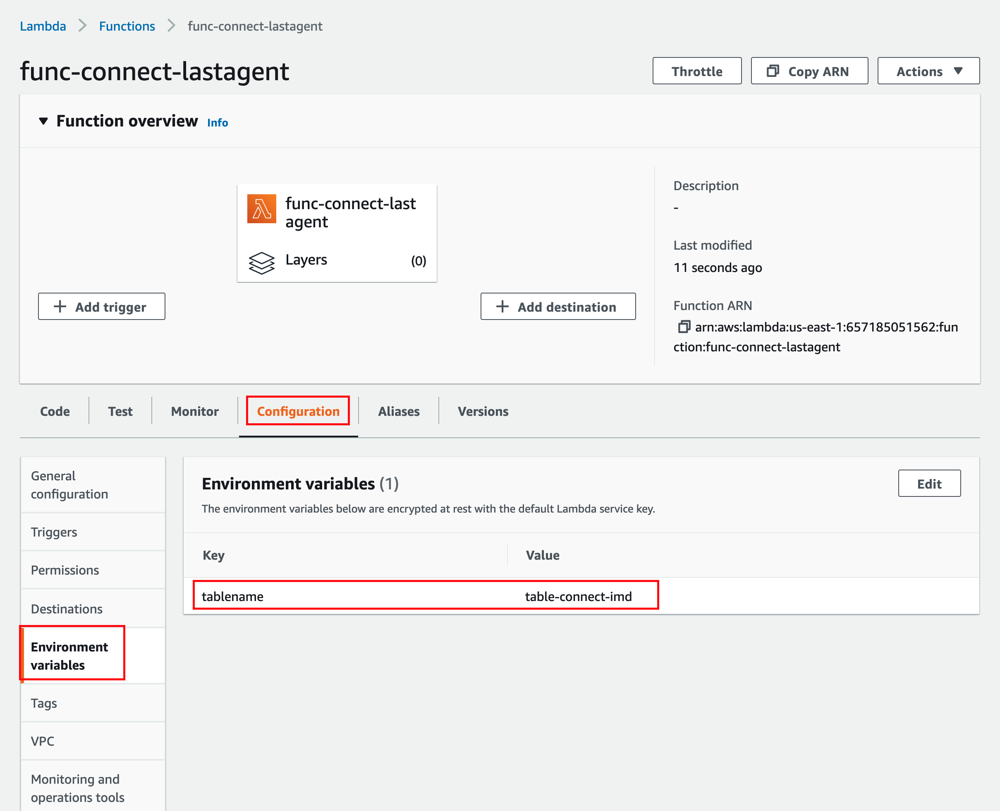
-
다시 Code 탭으로 이동한 후 Deploy 버튼을 클릭하여 함수를 배포합니다.

-
아래 화면과 같이 배포가 완료됐는지 확인합니다. 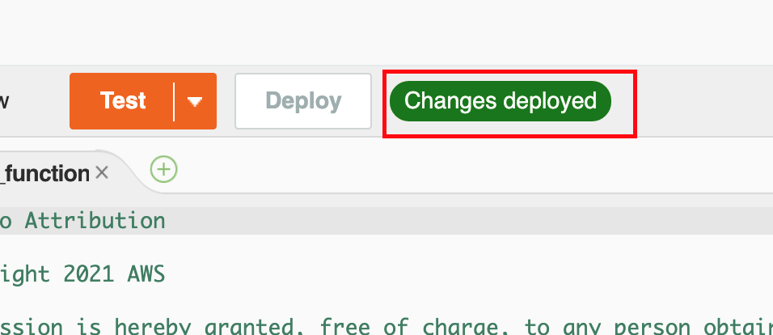
-
AWS 콘솔로 이동하여 Amazon Connect 서비스로 이동합니다. (Connect 콘솔이 아닙니다.) 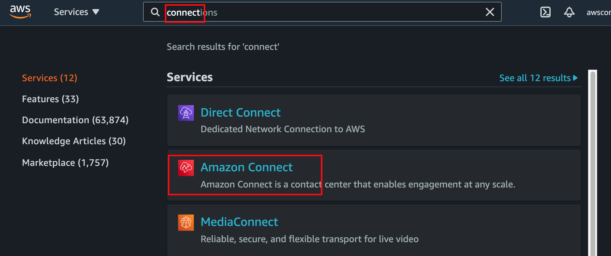
-
이전에 생성한 인스턴스를 클릭하여 진행합니다. 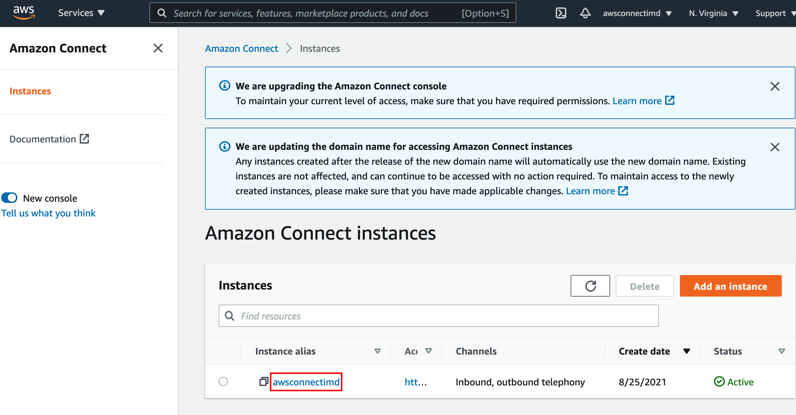
-
아래와 같이 Contact flows 메뉴에서 AWS Lambda 항목의 설정을 진행합니다. 기존에 등록했던 func-connect-imd 함수 외에 func-connect-lastagent 함수까지 등록을 합니다. 아래 화면과 같이 총 2개의 함수가 등록이 되어 있어야합니다. (꼭 +Add Lambda Function 버튼을 클릭하여 저장하여야 합니다.) 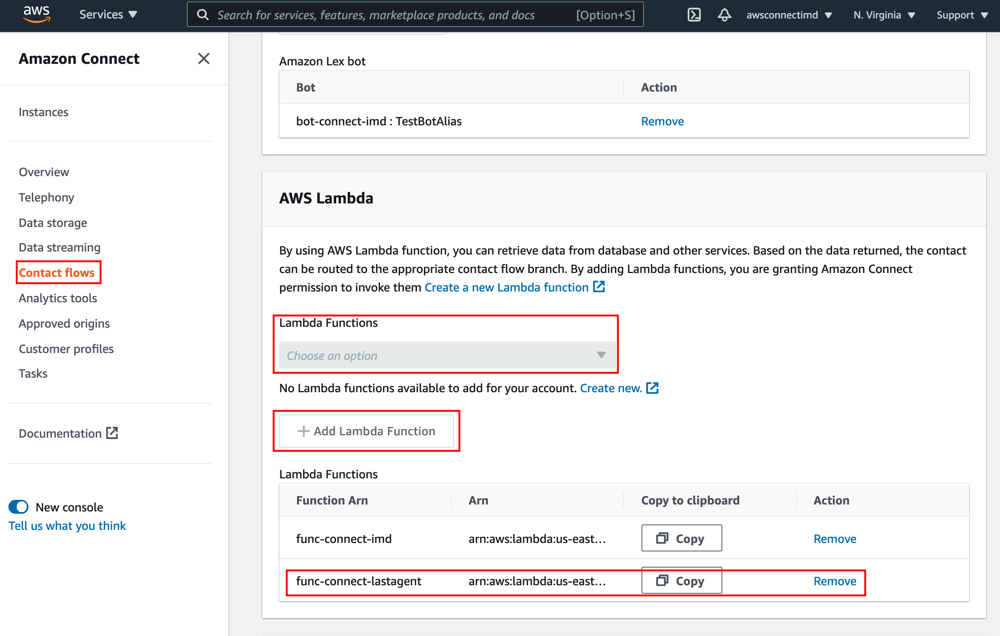
Customer whisper flow 에서 lastagent 정보 업데이트 하기
- 이제 Connect 콘솔로 접속하여 Default customer whisper 를 클릭하여 편집합니다. 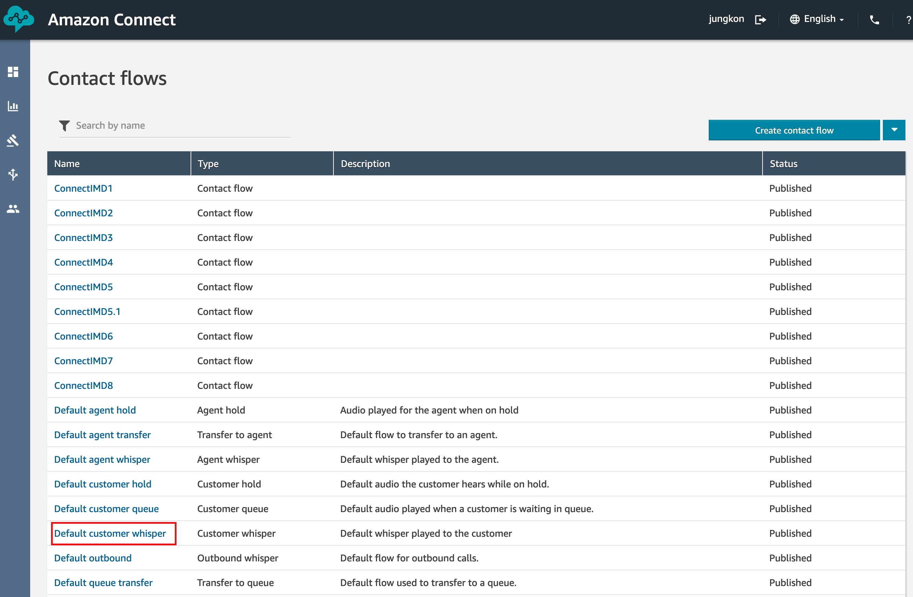
Customer whisper flow 는 고객이 상담원과 통화에 연결되었을 때, 고객의 시나리오를 지정할 수 있습니다. Connect 에 초기부터 저장되어 있는 Default customer whisper flow 는 기본적으로 통화 연결 시 beep 음을 내도록 구성되어 있으나, 위와 같이 변경할 수 있습니다. 또는 별도의 Customer whisper flow를 구성하여 Set whisper flow Command block으로 전역 설정할 수 있습니다.
-
아래 시나리오를 작성합니다. 각각의 Command Block 설정은 아래 설명을 참고하여 작성합니다. 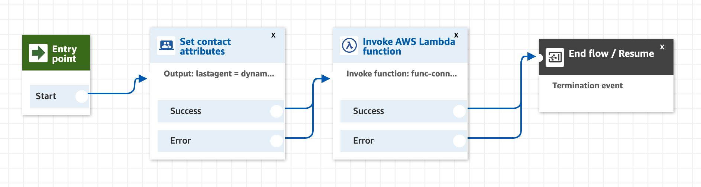
-
Set contact attributes Command block 을 왼쪽 리스트 중 Set 메뉴에서 Drag&Drop 으로 편집 화면으로 가져옵니다. 아래와 같이 설정한 후 저장합니다. lastagent Attribute 에 현재 연결된 상담원의 Username 정보를 저장합니다. 이 정보는 다음에 호출할 lambda 함수로 보내집니다. 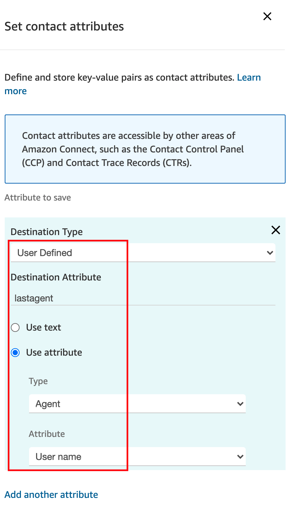
-
Invoke AWS Lambda function Command Block 을 왼쪽 리스트 중 Integrate 메뉴에서 Drag&Drop 으로 편집 화면으로 가져옵니다. 이전에 생성한 Lambda 함수 func-connect-lastagent 를 선택합니다. Save 버튼을 클릭하여 설정을 저장합니다. Lambda 함수를 호출하여 직전 상담원 정보를 DynamoDB 테이블에 반영합니다. 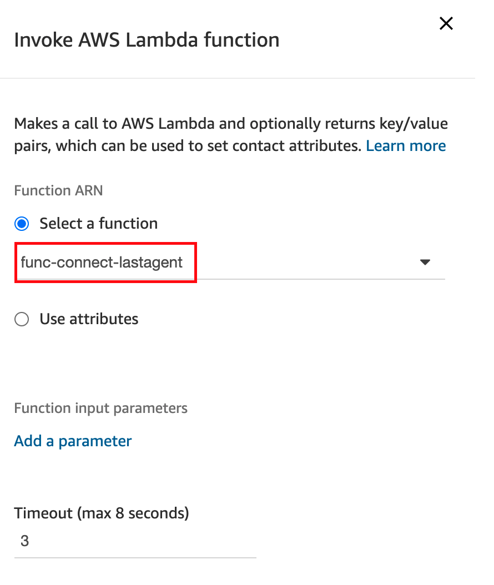
-
모든 시나리오를 작성했으면, Save 하고 Publish 를 합니다.
Last Agent Routing 시나리오 작성을 완료했습니다. 테스트를 통해 직전 상담원 연결이 잘 수행되는지 확인해보시기 바랍니다. 위 Get customer input 에서 상담원 연결을 선택하지 않는 분기를 선택한 후 Customer whisper flow에서 상담원 정보가 DynamoDB에 올바르게 업데이트 되는지 테스트해봅니다. 이후 다시 통화 테스트로 Get customer input 에서 직전 상담원 연결로 분기하여 해당 상담원에게 잘 연결이 되는지 확인합니다. Cloudwatch를 사용하며 명시적으로 확인할 수 있습니다.